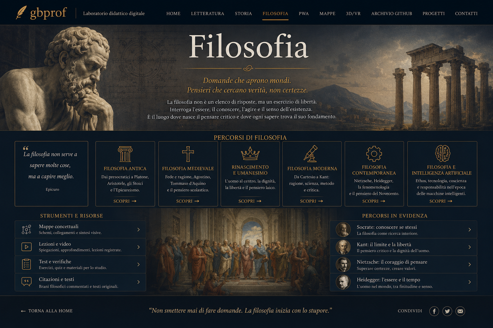

Porta d'ingresso
gbprof
⌘
Laboratorio didattico digitale.
Una soglia unica per lezioni, percorsi di letteratura, storia e filosofia, mappe concettuali, Progressive Web App, ambienti 3D/VR e progetti costruiti con intelligenza artificiale.
Copertina home